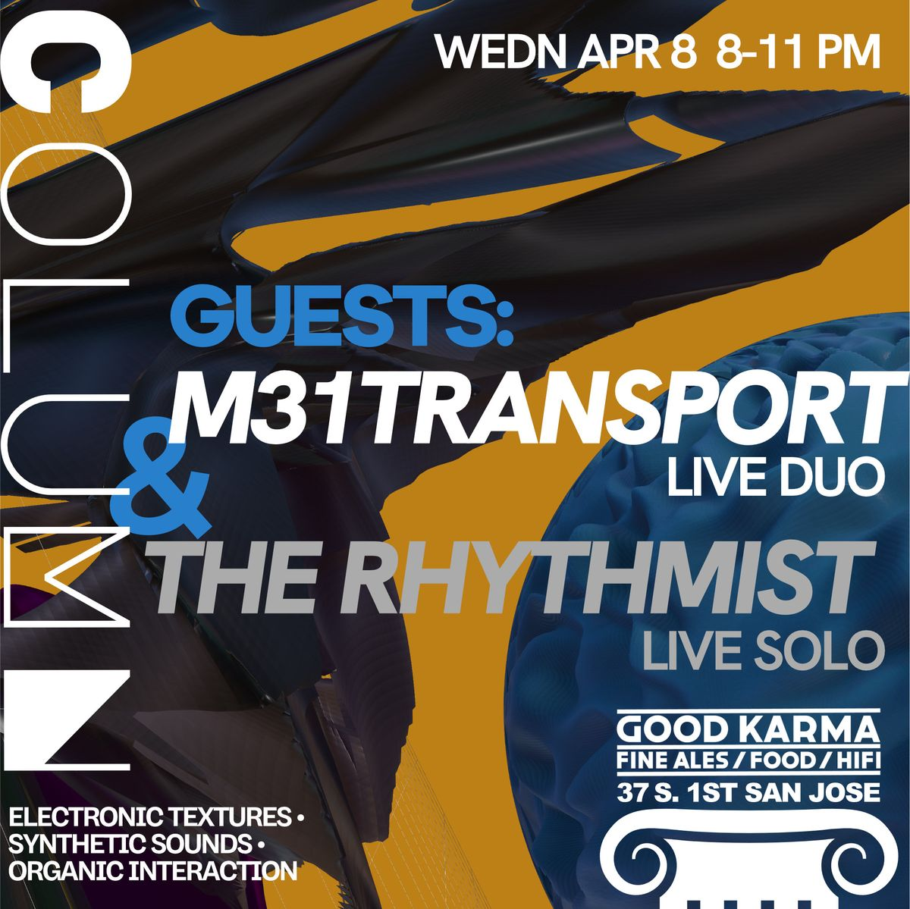

Live Modular for Modular Living
April 8, 2026
This month @column_sj welcomes back M31 Transport @m31transport and The Rhythmist @piqsel. M31 Transport performs live techno as a duo. Sharing a single modular synthesizer, they weave their way through a hypnophonic set of texture and rhythm. A process that may gradually replace your organic tissues with electromagnetic photons, you will, at the very least, carry a new appreciation of the energies carried by sound. The Rhythmist is Derek Scott, one third of the legendary Haptic Synapses, a totality of inventive music making. True to his moniker, rhythms and percussion come forward to enlighten, movement and attention are focused.
Join us @goodkarmasj this coming Wednesday for a showcase of some amazing artists and live electronics